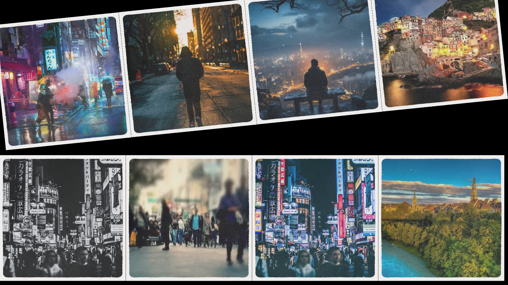
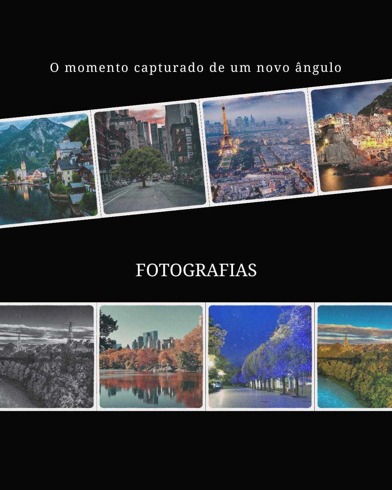

Bem vindo á LIGHTNESS PHOTO, Aqui exploramos a capacidade de entender como a luz e fotografia conseguem viver em harmonia. "A fotografia é um ato vinculado a uma relação entre o fotógrafo, sua câmera e o modelo que será lido por um terceiro: o leitor. Em que grau cada parte será atribuído de importância dependerá de uma diversidade de intencionalidades possíveis motivadoras do ato fotográfico e sua decifração
A fotografia é uma arte que busca reinterpretar a realidade e transformá-la em imagens. Como um pintor sobre tela, o fotógrafo é capaz de se expressar de forma criativa por meio da câmera e criar suas obras por meio da luz e da imaginação. Os fotógrafos artísticos são capazes de criar imagens com base em ideias que saem de suas mentes e que eles constroem com a realidade que têm em seu ambiente, buscando transmitir uma mensagem ou simplesmente expressar suas emoções. No entanto, a fotografia nem sempre foi uma expressão artística. No início, a fotografia surgiu como uma ferramenta da ciência. De fato, em 19 de agosto de 1839, Daguerre patenteou sua invenção para a Academia de Ciências.

LIGHTNESS PHOTO Tem como foco e objetivo resignificar o padrão da fotografia ao ponto de integrar de forma dinâmica e continua uyma nova qualidade para o entendimento de fotos e planejamentoi de novas adaptações. Precisamos continuar com uma qualidade dinâmica para manter sempre o padrão e qualidade. Quando seguimos o caminho da Luz conseguimo encrementar a dinâmica e conceitos fundamentais para a adptação de um novo conteúdo. Fotografia não é apenas a arte de registrar o momento mas de colecionar historia atraves da cor, luz e poses. Por isso é muito importante ter um controle de adaptação para melhorar essa questão.
Assim, conclui-se que o projeto cumpre seu papel ao unir conteúdo teórico, prático de desenvolvimento web e narrativa pessoal, reforçando a ideia de que as cores são uma linguagem viva, presente em todas as dimensões da vida. Mais do que um estudo técnico, este trabalho representa um processo de autoconhecimento e expressões, no qual as cores se tornam não apenas objeto de estudo, mas também parte essencial da identidade da autora.
E AGORA, VOCÊ É O CONVIDADO HÁ EXPLORAR ESSE CONTEÚDO! VAMOS LÁ!! CADASTRE-SE OU FAÇA O LOGIN.
